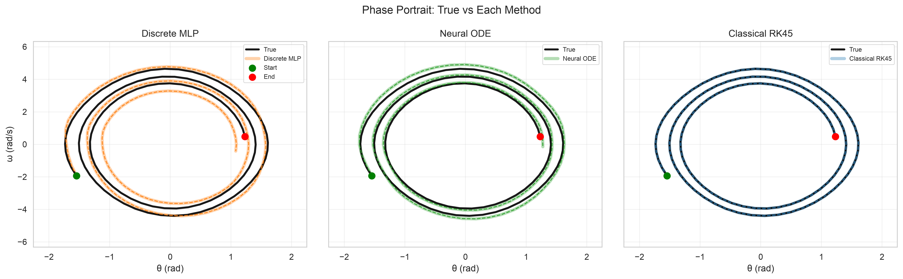
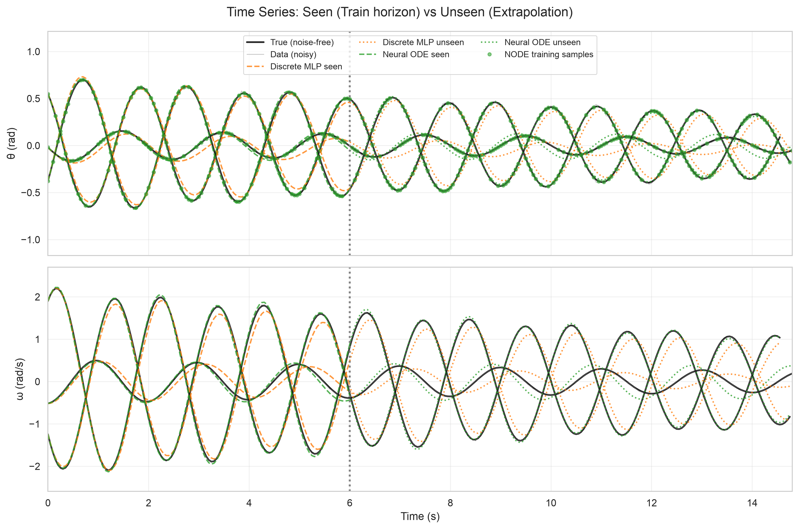
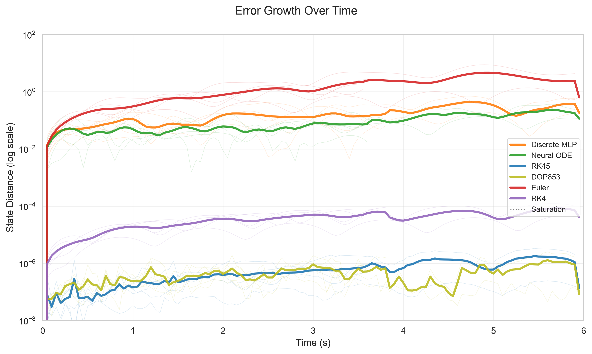
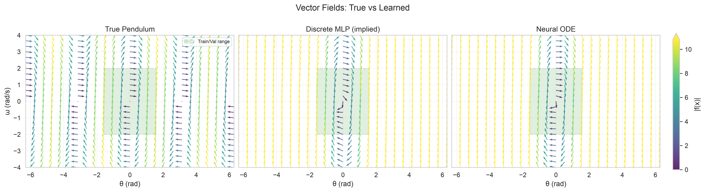
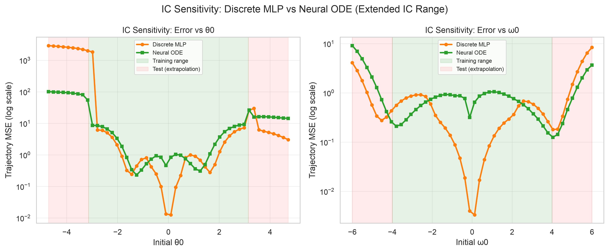
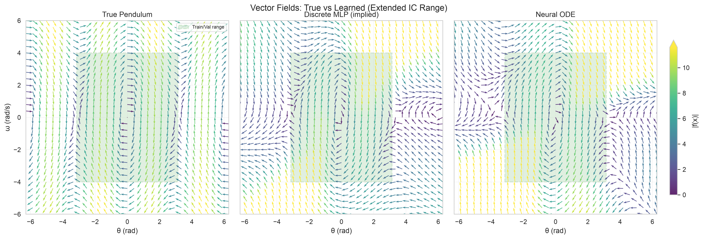

What's a Neural ODE?
Almost every neural network you meet works like a snapshot machine: some input goes in, an output comes out, one shot. y = f(x). That's great for images and tokens. But a lot of the world doesn't work in snapshots — it unfolds. A pendulum doesn't jump from position to position; it flows through them, continuously, at a speed that depends on where it currently is.
A Neural ODE takes that seriously. Instead of the network being the answer, the network is the rule of change:
dx/dt = f(x, t) ← the network
x(t) = ODE solver(f, x₀, t) ← the answerThe network outputs how fast things change right now, at every point of the state space. To actually get somewhere, you hand it to an ODE solver, which takes lots of tiny steps along that field and lands wherever you asked. You never trained "the future" — you trained the physics-like rule that generates every future.
There's a neat connection hiding here. A ResNet layer is x_{k+1} = x_k + f(x_k) — and that is literally one Euler step of an ODE. The Neural ODE idea (Chen et al., 2018) is basically: stop pretending the step has to be discrete. Make time continuous, let the solver decide how big each step should be, and the network becomes a genuine dynamical system.
One more framing that helps: a fixed-step network is like a stack of video frames — a valid prediction every 0.05 s and nothing in between. A Neural ODE is like the physics engine behind the video. The frames come out of it at any frame rate you want.
The Test Bench: A Pendulum
The pendulum isn't special. It's just the equation we picked to play against — a two-dimensional ODE with a nice mix of nonlinearity (sin θ) and damping:
dθ/dt = ω
dω/dt = −(g/L)·sin(θ) − b·ω
The whole point: the network never sees this equation. We integrate it numerically to make training data — 300 trajectories with random starting angles (θ₀ ∈ ±π/2) and speeds (ω₀ ∈ ±2), sampled every 0.05 s, with a bit of measurement noise sprinkled on top, lengths up to 3 periods (plus some 8-period ones for long-horizon tests). The model gets nothing but those noisy (θ, ω) observations and their timestamps. If it learns anything about motion, it learned it from data alone.
Training the Field
The network inside is small: 2 → 64 → 64 → 64 → 64 → 2 with SiLU activations — 12,802 parameters. Its output is interpreted as (dθ/dt, dω/dt).
Training looks like this: sample a short window of observed states, integrate the network's field across that window with an adaptive solver (dopri5), and penalize the mismatch against the observed states. No access to the true derivatives — just "your trajectory should match what was recorded". The window length ramps up over training, so the model first learns to be right locally, then to stay right while rolling forward.
Backpropagating through an ODE solver sounds terrifying — the solver might take thousands of steps. The adjoint method makes it practical: instead of storing every intermediate state, it integrates the gradients backwards through the same solver. Memory stays constant no matter how many solver steps happen; you pay in compute instead. That trade is the standard deal with Neural ODEs.
And here's the detail that exercises the ODE's superpower: the training timestamps are irregular. Each trajectory keeps only about half of its time points, chosen at random, so the gaps between observations are uneven. Real measurements are never perfectly even — sensors skip, drop, jitter — and a Neural ODE doesn't care, because integrating across any gap is exactly what a solver does. A fixed-step network, by contrast, has to be rebuilt for every sampling pattern. (For reference, we also trained a plain MLP as a fixed-step map — same trunk, same seed — to see what the ODE actually buys.)
What It Learned
After 200 epochs, the network produces full trajectories from a starting state alone. Measured against the noise-free truth:
| Model | Unseen starts | Longer rollouts | Bigger starts |
|---|---|---|---|
| Neural ODE | 1.2×10⁻² | 1.2×10⁻² | 0.86 |
| Fixed-step MLP (reference) | 3.9×10⁻² | 4.8×10⁻² | 0.91 |
The ODE lands about 3–4× lower error than the fixed-step reference on states it wasn't trained on — while having seen half the data points, at irregular times. The intuition for why: the MLP's tiny one-step mistakes get chained together hundreds of times, and they compound (its predicted orbits visibly drift). The ODE's errors come from one smooth field, so there's far less machinery for error to build up in.



Looking Inside: The Learned Field
The best part of a Neural ODE is that you can open it up. The network is a velocity field, so we can evaluate it anywhere in the state space and draw what it believes:

That picture is the whole story of a Neural ODE in one glance: the network didn't memorize trajectories, it recovered a rule — arrows pointing the right way everywhere it was shown data. And also the honest limit of the idea: where there was no data, the arrows say whatever the network's priors say. There's no free physics.
Any Time You Want
Because the model is continuous, asking for the state at t = 0.137 s is not a special case — the solver just stops there. We tested this by querying both models at irregular (unevenly spaced) timestamps. The fixed-step network can only produce states on its own 0.05 s grid and gets linearly interpolated in between; the ODE integrates directly to each query time.
| Model | Unseen starts | Longer rollouts | Bigger starts |
|---|---|---|---|
| Neural ODE (native) | 1.2×10⁻² | 1.2×10⁻² | 0.86 |
| Fixed-step MLP (interpolated) | 4.0×10⁻² | 4.7×10⁻² | 0.92 |
Where the Field Ends
Figure 4 already hints at the boundary: the field is only honest inside the green box. So we pushed the box. A second full training run with starting angles covering the entire swing (θ₀ ∈ ±π instead of ±π/2) and speeds up to ±4 — everything else identical, extrapolation tests moved to 1.5× of the new box.


The cliff where predictions fall apart isn't a property of the model class — it's a property of the data you fed it. Widen the data, the cliff moves. That's worth remembering every time someone (including future-you) is impressed by a learned model's "generalization": check where the green box was.
What Neural ODEs Buy You
- A rule, not a table — one field generates every trajectory from every starting point, instead of a separate chained map per time step.
- Any query time — the solver stops wherever you ask; no retraining or interpolation hacks for new sampling rates.
- Irregular data, natively — uneven observation gaps are just integration gaps. Trained here on 50% of the points, unevenly spaced, and still came out ahead.
- Constant-memory gradients — the adjoint method backpropagates through arbitrarily many solver steps without storing them.
- Honest boundaries — the learned field shows you exactly where its knowledge ends (Figure 4), which is more than most models admit.
The trade-offs are real: training is slow (the adjoint's compute bill — about 2.2 hours here vs seconds for the fixed-step baseline), you inherit solver accuracy questions, and sharp jumps can force tiny solver steps. Continuous-depth models are a tool for problems that are continuous — like this one.
Run It Yourself
# Data -> train the ODE -> evaluate -> figures (~2.2 h)
cd node
python main.py full-pipeline
python main.py summarize # comparison tables
# Extended-range variant (train on the full swing)
python extended_experiment.py
Outputs land in node/data/ (models, metrics) and docs/images/node/ (figures). The extended experiment writes its own files (extended_*.png, data/extended/) so the two experiments never overwrite each other.
Implementation Details
Everything is built with plain PyTorch primitives. The codebase lives in node/:
data_env.py— trajectory generation, irregular re-sampling of the same trajectories, dataset/dataloader classesmodel.py—NeuralODEwith the adjoint integrator, plus theDiscreteMLPreference baselinetrain.py— both trainers (windowed rollout training with a length curriculum)evaluate.py— dual-protocol evaluation and arbitrary-time queriesmain.py— orchestration +summarizecommandextended_experiment.py— the wider-range variantviz/— all figures above, one module per figure
Key Hyperparameters
| Parameter | Value | Description |
|---|---|---|
| Network | 2→64→64→64→64→2 | The field f(x); 12,802 params |
| Time step Δt | 0.05 s | Sampling rate of the data |
| Trajectories | 300 (+ mirrored) | Random ICs, variable lengths |
| Train IC range | θ ±π/2, ω ±2 | ±π, ±4 in the extended experiment |
| Epochs | 200 | Adam lr=10⁻³, cosine schedule |
| ODE solver | dopri5 + adjoint | Training and evaluation |
| Irregular sampling | 50% of points | What the ODE trains on |